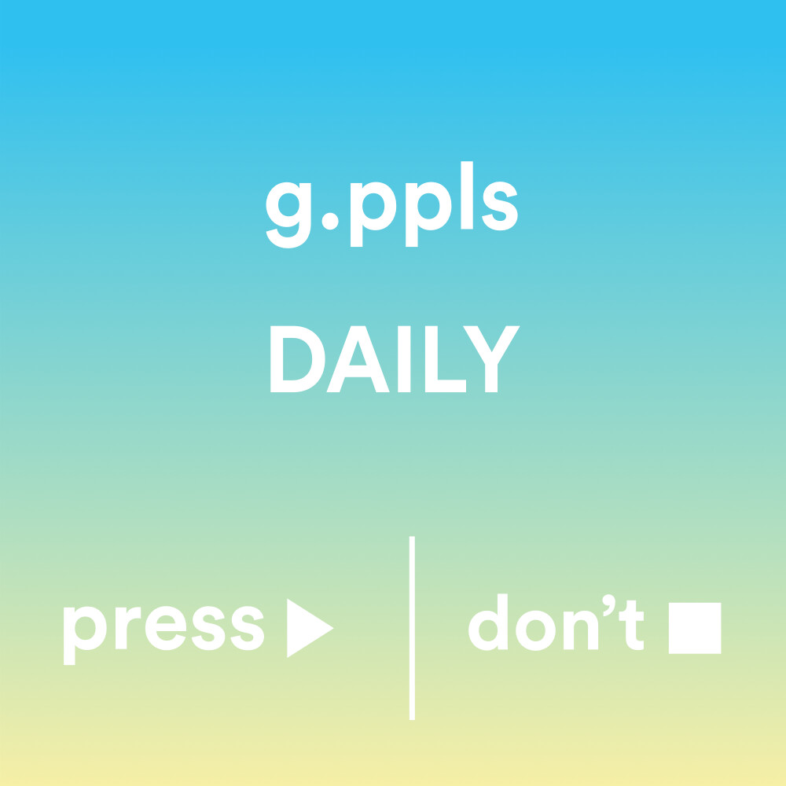
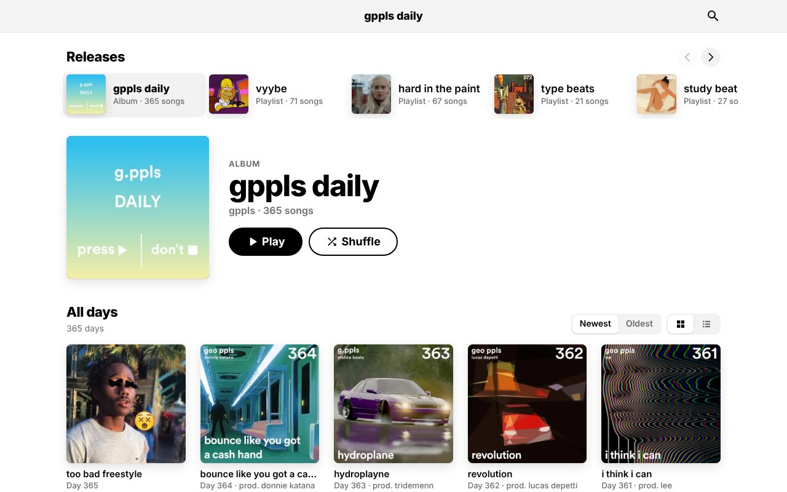
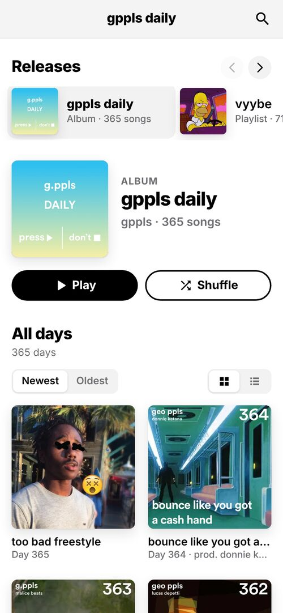

Gppls
Daily
A new song every day for 365 days.

- Role
- Artist (as geo ppls), designer, engineer
- Music
- 365 songs, one a day, 2018–2019
- Player
- Vanilla JS PWA with a Node API
- Player launched
- October 2024
OVERVIEW
gppls daily was my project to make a song a day for a year and publish each song on the same day I made it. 365 days, 365 songs, under my artist name geo ppls. Day 365, “too bad freestyle,” went up on October 28, 2019.
Then I kept going with it: #40days40bops put a song a day from the project on Spotify, Apple Music and the other streaming platforms, I streamed favorites on Twitch, and tracks were minted as music NFTs. The best songs became official releases, including the album Nerdcore (2025) and the Moon Lambo EP.
THE PLAYER
Most of the catalog lived only on SoundCloud, scattered across uploads. So I built it a home: a web player where all 365 days are laid out with their cover art. Click a cover and it plays. It installs on your phone as an app.

- Every day as a tile, plus releases and playlists like vyybe, hard in the paint, type beats and study beats.
- A Now Playing screen with shuffle, repeat, queue and volume.
- Installable as a PWA, with artwork that loads fast on mobile.
- A small Node API serves the song data and art.

More Projects